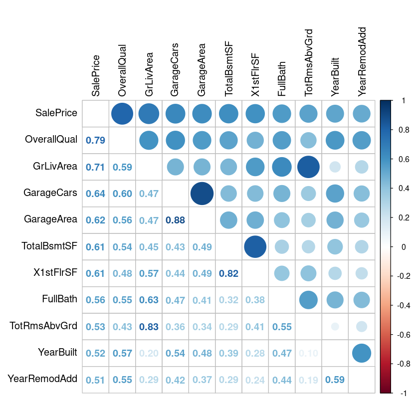
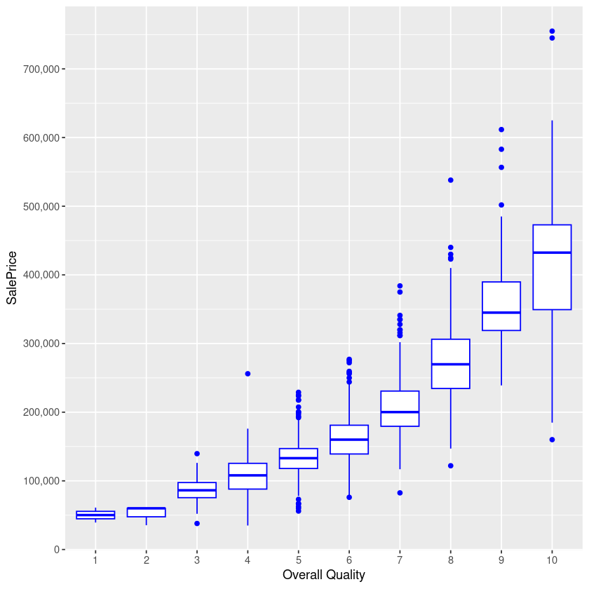
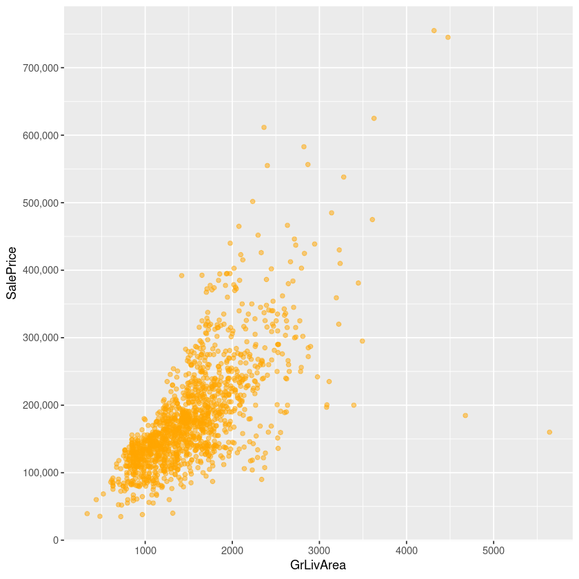
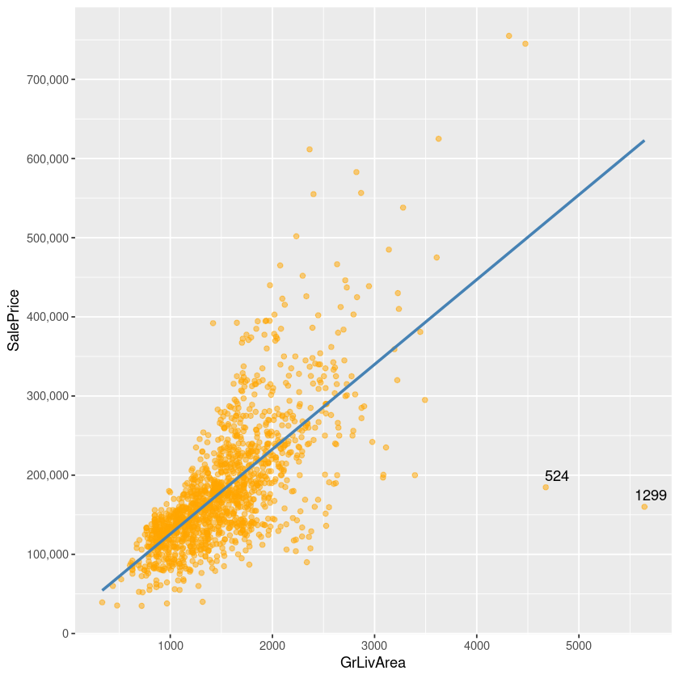
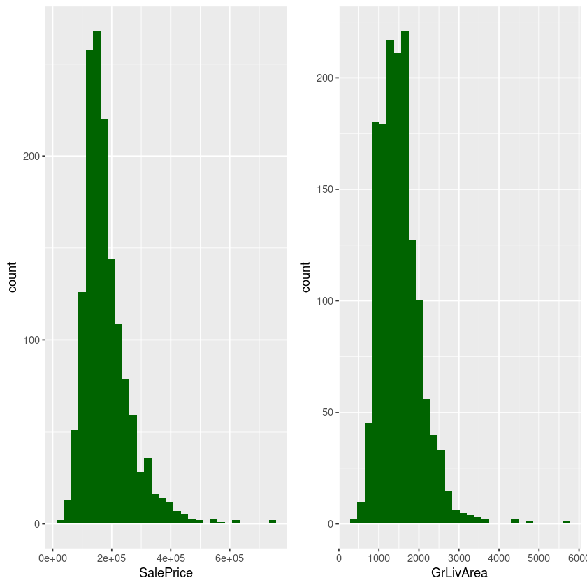
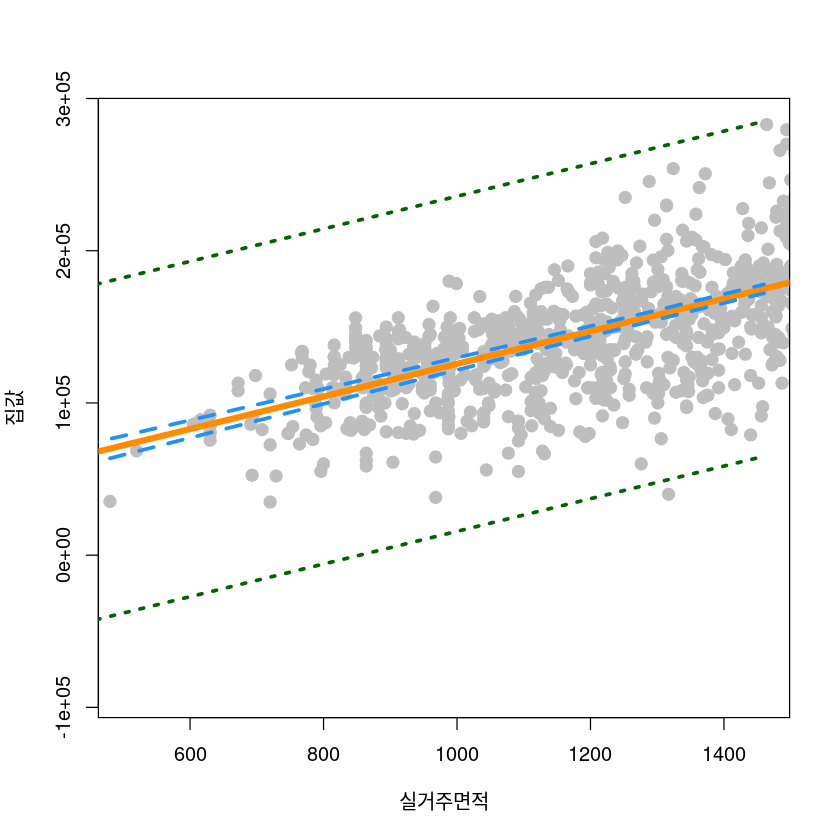
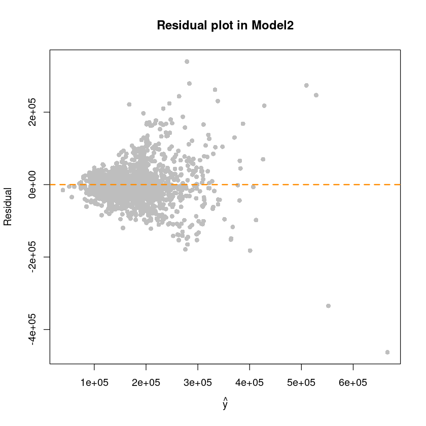
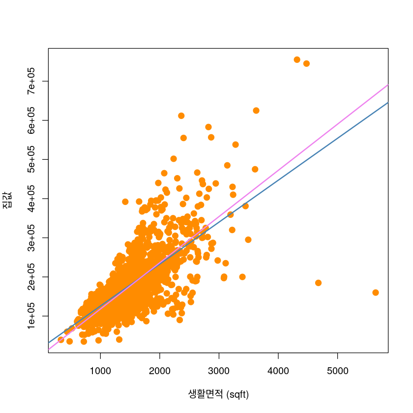

Simple Linear Regresson
- Lotarea : 대지면적
- GrLivArea: 지상 생활권 면적 (sqft)
- SlaePrice: 집 값 (dollar)
데이터 불러오기
| Id | MSSubClass | MSZoning | LotFrontage | LotArea | Street | Alley | LotShape | LandContour | Utilities | ⋯ | PoolArea | PoolQC | Fence | MiscFeature | MiscVal | MoSold | YrSold | SaleType | SaleCondition | SalePrice | |
|---|---|---|---|---|---|---|---|---|---|---|---|---|---|---|---|---|---|---|---|---|---|
| <int> | <int> | <chr> | <int> | <int> | <chr> | <chr> | <chr> | <chr> | <chr> | ⋯ | <int> | <chr> | <chr> | <chr> | <int> | <int> | <int> | <chr> | <chr> | <int> | |
| 1 | 1 | 60 | RL | 65 | 8450 | Pave | NA | Reg | Lvl | AllPub | ⋯ | 0 | NA | NA | NA | 0 | 2 | 2008 | WD | Normal | 208500 |
| 2 | 2 | 20 | RL | 80 | 9600 | Pave | NA | Reg | Lvl | AllPub | ⋯ | 0 | NA | NA | NA | 0 | 5 | 2007 | WD | Normal | 181500 |
| 3 | 3 | 60 | RL | 68 | 11250 | Pave | NA | IR1 | Lvl | AllPub | ⋯ | 0 | NA | NA | NA | 0 | 9 | 2008 | WD | Normal | 223500 |
| 4 | 4 | 70 | RL | 60 | 9550 | Pave | NA | IR1 | Lvl | AllPub | ⋯ | 0 | NA | NA | NA | 0 | 2 | 2006 | WD | Abnorml | 140000 |
| 5 | 5 | 60 | RL | 84 | 14260 | Pave | NA | IR1 | Lvl | AllPub | ⋯ | 0 | NA | NA | NA | 0 | 12 | 2008 | WD | Normal | 250000 |
| 6 | 6 | 50 | RL | 85 | 14115 | Pave | NA | IR1 | Lvl | AllPub | ⋯ | 0 | NA | MnPrv | Shed | 700 | 10 | 2009 | WD | Normal | 143000 |
'data.frame': 1460 obs. of 81 variables:
$ Id : int 1 2 3 4 5 6 7 8 9 10 ...
$ MSSubClass : int 60 20 60 70 60 50 20 60 50 190 ...
$ MSZoning : chr "RL" "RL" "RL" "RL" ...
$ LotFrontage : int 65 80 68 60 84 85 75 NA 51 50 ...
$ LotArea : int 8450 9600 11250 9550 14260 14115 10084 10382 6120 7420 ...
$ Street : chr "Pave" "Pave" "Pave" "Pave" ...
$ Alley : chr NA NA NA NA ...
$ LotShape : chr "Reg" "Reg" "IR1" "IR1" ...
$ LandContour : chr "Lvl" "Lvl" "Lvl" "Lvl" ...
$ Utilities : chr "AllPub" "AllPub" "AllPub" "AllPub" ...
$ LotConfig : chr "Inside" "FR2" "Inside" "Corner" ...
$ LandSlope : chr "Gtl" "Gtl" "Gtl" "Gtl" ...
$ Neighborhood : chr "CollgCr" "Veenker" "CollgCr" "Crawfor" ...
$ Condition1 : chr "Norm" "Feedr" "Norm" "Norm" ...
$ Condition2 : chr "Norm" "Norm" "Norm" "Norm" ...
$ BldgType : chr "1Fam" "1Fam" "1Fam" "1Fam" ...
$ HouseStyle : chr "2Story" "1Story" "2Story" "2Story" ...
$ OverallQual : int 7 6 7 7 8 5 8 7 7 5 ...
$ OverallCond : int 5 8 5 5 5 5 5 6 5 6 ...
$ YearBuilt : int 2003 1976 2001 1915 2000 1993 2004 1973 1931 1939 ...
$ YearRemodAdd : int 2003 1976 2002 1970 2000 1995 2005 1973 1950 1950 ...
$ RoofStyle : chr "Gable" "Gable" "Gable" "Gable" ...
$ RoofMatl : chr "CompShg" "CompShg" "CompShg" "CompShg" ...
$ Exterior1st : chr "VinylSd" "MetalSd" "VinylSd" "Wd Sdng" ...
$ Exterior2nd : chr "VinylSd" "MetalSd" "VinylSd" "Wd Shng" ...
$ MasVnrType : chr "BrkFace" "None" "BrkFace" "None" ...
$ MasVnrArea : int 196 0 162 0 350 0 186 240 0 0 ...
$ ExterQual : chr "Gd" "TA" "Gd" "TA" ...
$ ExterCond : chr "TA" "TA" "TA" "TA" ...
$ Foundation : chr "PConc" "CBlock" "PConc" "BrkTil" ...
$ BsmtQual : chr "Gd" "Gd" "Gd" "TA" ...
$ BsmtCond : chr "TA" "TA" "TA" "Gd" ...
$ BsmtExposure : chr "No" "Gd" "Mn" "No" ...
$ BsmtFinType1 : chr "GLQ" "ALQ" "GLQ" "ALQ" ...
$ BsmtFinSF1 : int 706 978 486 216 655 732 1369 859 0 851 ...
$ BsmtFinType2 : chr "Unf" "Unf" "Unf" "Unf" ...
$ BsmtFinSF2 : int 0 0 0 0 0 0 0 32 0 0 ...
$ BsmtUnfSF : int 150 284 434 540 490 64 317 216 952 140 ...
$ TotalBsmtSF : int 856 1262 920 756 1145 796 1686 1107 952 991 ...
$ Heating : chr "GasA" "GasA" "GasA" "GasA" ...
$ HeatingQC : chr "Ex" "Ex" "Ex" "Gd" ...
$ CentralAir : chr "Y" "Y" "Y" "Y" ...
$ Electrical : chr "SBrkr" "SBrkr" "SBrkr" "SBrkr" ...
$ X1stFlrSF : int 856 1262 920 961 1145 796 1694 1107 1022 1077 ...
$ X2ndFlrSF : int 854 0 866 756 1053 566 0 983 752 0 ...
$ LowQualFinSF : int 0 0 0 0 0 0 0 0 0 0 ...
$ GrLivArea : int 1710 1262 1786 1717 2198 1362 1694 2090 1774 1077 ...
$ BsmtFullBath : int 1 0 1 1 1 1 1 1 0 1 ...
$ BsmtHalfBath : int 0 1 0 0 0 0 0 0 0 0 ...
$ FullBath : int 2 2 2 1 2 1 2 2 2 1 ...
$ HalfBath : int 1 0 1 0 1 1 0 1 0 0 ...
$ BedroomAbvGr : int 3 3 3 3 4 1 3 3 2 2 ...
$ KitchenAbvGr : int 1 1 1 1 1 1 1 1 2 2 ...
$ KitchenQual : chr "Gd" "TA" "Gd" "Gd" ...
$ TotRmsAbvGrd : int 8 6 6 7 9 5 7 7 8 5 ...
$ Functional : chr "Typ" "Typ" "Typ" "Typ" ...
$ Fireplaces : int 0 1 1 1 1 0 1 2 2 2 ...
$ FireplaceQu : chr NA "TA" "TA" "Gd" ...
$ GarageType : chr "Attchd" "Attchd" "Attchd" "Detchd" ...
$ GarageYrBlt : int 2003 1976 2001 1998 2000 1993 2004 1973 1931 1939 ...
$ GarageFinish : chr "RFn" "RFn" "RFn" "Unf" ...
$ GarageCars : int 2 2 2 3 3 2 2 2 2 1 ...
$ GarageArea : int 548 460 608 642 836 480 636 484 468 205 ...
$ GarageQual : chr "TA" "TA" "TA" "TA" ...
$ GarageCond : chr "TA" "TA" "TA" "TA" ...
$ PavedDrive : chr "Y" "Y" "Y" "Y" ...
$ WoodDeckSF : int 0 298 0 0 192 40 255 235 90 0 ...
$ OpenPorchSF : int 61 0 42 35 84 30 57 204 0 4 ...
$ EnclosedPorch: int 0 0 0 272 0 0 0 228 205 0 ...
$ X3SsnPorch : int 0 0 0 0 0 320 0 0 0 0 ...
$ ScreenPorch : int 0 0 0 0 0 0 0 0 0 0 ...
$ PoolArea : int 0 0 0 0 0 0 0 0 0 0 ...
$ PoolQC : chr NA NA NA NA ...
$ Fence : chr NA NA NA NA ...
$ MiscFeature : chr NA NA NA NA ...
$ MiscVal : int 0 0 0 0 0 700 0 350 0 0 ...
$ MoSold : int 2 5 9 2 12 10 8 11 4 1 ...
$ YrSold : int 2008 2007 2008 2006 2008 2009 2007 2009 2008 2008 ...
$ SaleType : chr "WD" "WD" "WD" "WD" ...
$ SaleCondition: chr "Normal" "Normal" "Normal" "Abnorml" ...
$ SalePrice : int 208500 181500 223500 140000 250000 143000 307000 200000 129900 118000 ...'data.frame': 1460 obs. of 11 variables:
$ Id : int 1 2 3 4 5 6 7 8 9 10 ...
$ MSSubClass : int 60 20 60 70 60 50 20 60 50 190 ...
$ MSZoning : chr "RL" "RL" "RL" "RL" ...
$ LotFrontage: int 65 80 68 60 84 85 75 NA 51 50 ...
$ LotArea : int 8450 9600 11250 9550 14260 14115 10084 10382 6120 7420 ...
$ Street : chr "Pave" "Pave" "Pave" "Pave" ...
$ Alley : chr NA NA NA NA ...
$ LotShape : chr "Reg" "Reg" "IR1" "IR1" ...
$ LandContour: chr "Lvl" "Lvl" "Lvl" "Lvl" ...
$ Utilities : chr "AllPub" "AllPub" "AllPub" "AllPub" ...
$ SalePrice : int 208500 181500 223500 140000 250000 143000 307000 200000 129900 118000 ...Data fields
Here’s a brief version of what you’ll find in the data description file.
| Variable name | Description |
|---|---|
| SalePrice | the property’s sale price in dollars. This is the target variable that you’re trying to predict. |
| MSSubClass | The building class |
| MSZoning | The general zoning classification |
| LotFrontage: | Linear feet of street connected to property |
| LotArea | Lot size in square feet |
| Street: | Type of road access |
| Alley: | Type of alley access |
| LotShape: | General shape of property |
| LandContour: | Flatness of the property |
| Utilities: | Type of utilities available |
| LotConfig: | Lot configuration |
| LandSlope: | Slope of property |
| Neighborhood: | Physical locations within Ames city limits |
| Condition1: | Proximity to main road or railroad |
| Condition2: | Proximity to main road or railroad (if a second is present) |
| BldgType: | Type of dwelling |
| HouseStyle: | Style of dwelling |
| OverallQual: | Overall material and finish quality |
| OverallCond: | Overall condition rating |
| YearBuilt: | Original construction date |
| YearRemodAdd: | Remodel date |
| RoofStyle: | Type of roof |
| RoofMatl: | Roof material |
| Exterior1st: | Exterior covering on house |
| Exterior2nd: | Exterior covering on house (if more than one material) |
| MasVnrType: | Masonry veneer type |
| MasVnrArea: | Masonry veneer area in square feet |
| ExterQual: | Exterior material quality |
| ExterCond: | Present condition of the material on the exterior |
| Foundation: | Type of foundation |
| BsmtQual: | Height of the basement |
| BsmtCond: | General condition of the basement |
| BsmtExposure: | Walkout or garden level basement walls |
| BsmtFinType1: | Quality of basement finished area |
| BsmtFinSF1: | Type 1 finished square feet |
| BsmtFinType2: | Quality of second finished area (if present) |
| BsmtFinSF2: | Type 2 finished square feet |
| BsmtUnfSF: | Unfinished square feet of basement area |
| TotalBsmtSF: | Total square feet of basement area |
| Heating: | Type of heating |
| HeatingQC: | Heating quality and condition |
| CentralAir: | Central air conditioning |
| Electrical: | Electrical system |
| 1stFlrSF: | First Floor square feet |
| 2ndFlrSF: | Second floor square feet |
| LowQualFinSF: | Low quality finished square feet (all floors) |
| GrLivArea | Above grade (ground) living area square feet |
| BsmtFullBath: | Basement full bathrooms |
| BsmtHalfBath: | Basement half bathrooms |
| FullBath: | Full bathrooms above grade |
| HalfBath: | Half baths above grade |
| Bedroom: | Number of bedrooms above basement level |
| Kitchen: | Number of kitchens |
| KitchenQual: | Kitchen quality |
| TotRmsAbvGrd: | Total rooms above grade (does not include bathrooms) |
| Functional: | Home functionality rating |
| Fireplaces: | Number of fireplaces |
| FireplaceQu: | Fireplace quality |
| GarageType: | Garage location |
| GarageYrBlt: | Year garage was built |
| GarageFinish: | Interior finish of the garage |
| GarageCars: | Size of garage in car capacity |
| GarageArea: | Size of garage in square feet |
| GarageQual: | Garage quality |
| GarageCond: | Garage condition |
| PavedDrive: | Paved driveway |
| WoodDeckSF: | Wood deck area in square feet |
| OpenPorchSF: | Open porch area in square feet |
| EnclosedPorch: | Enclosed porch area in square feet |
| 3SsnPorch: | Three season porch area in square feet |
| ScreenPorch: | Screen porch area in square feet |
| PoolArea: | Pool area in square feet |
| PoolQC: | Pool quality |
| Fence: | Fence quality |
| MiscFeature: | Miscellaneous feature not covered in other categories |
| MiscVal: | Value of miscellaneous feature |
| MoSold: | Month Sold |
| YrSold: | Year Sold |
| SaleType: | Type of sale |
| SaleCondition: | Condition of sale |
탐색
- Id
- 0
- MSSubClass
- 0
- MSZoning
- 0
- LotFrontage
- 259
- LotArea
- 0
- Street
- 0
- Alley
- 1369
- LotShape
- 0
- LandContour
- 0
- Utilities
- 0
- LotConfig
- 0
- LandSlope
- 0
- Neighborhood
- 0
- Condition1
- 0
- Condition2
- 0
- BldgType
- 0
- HouseStyle
- 0
- OverallQual
- 0
- OverallCond
- 0
- YearBuilt
- 0
- YearRemodAdd
- 0
- RoofStyle
- 0
- RoofMatl
- 0
- Exterior1st
- 0
- Exterior2nd
- 0
- MasVnrType
- 8
- MasVnrArea
- 8
- ExterQual
- 0
- ExterCond
- 0
- Foundation
- 0
- BsmtQual
- 37
- BsmtCond
- 37
- BsmtExposure
- 38
- BsmtFinType1
- 37
- BsmtFinSF1
- 0
- BsmtFinType2
- 38
- BsmtFinSF2
- 0
- BsmtUnfSF
- 0
- TotalBsmtSF
- 0
- Heating
- 0
- HeatingQC
- 0
- CentralAir
- 0
- Electrical
- 1
- X1stFlrSF
- 0
- X2ndFlrSF
- 0
- LowQualFinSF
- 0
- GrLivArea
- 0
- BsmtFullBath
- 0
- BsmtHalfBath
- 0
- FullBath
- 0
- HalfBath
- 0
- BedroomAbvGr
- 0
- KitchenAbvGr
- 0
- KitchenQual
- 0
- TotRmsAbvGrd
- 0
- Functional
- 0
- Fireplaces
- 0
- FireplaceQu
- 690
- GarageType
- 81
- GarageYrBlt
- 81
- GarageFinish
- 81
- GarageCars
- 0
- GarageArea
- 0
- GarageQual
- 81
- GarageCond
- 81
- PavedDrive
- 0
- WoodDeckSF
- 0
- OpenPorchSF
- 0
- EnclosedPorch
- 0
- X3SsnPorch
- 0
- ScreenPorch
- 0
- PoolArea
- 0
- PoolQC
- 1453
- Fence
- 1179
- MiscFeature
- 1406
- MiscVal
- 0
- MoSold
- 0
- YrSold
- 0
- SaleType
- 0
- SaleCondition
- 0
- SalePrice
- 0
numeric_vars <- which(sapply(df, is.numeric)) # index vector numeric variables
numeric_var_names <- names(numeric_vars)
cat('There are', length(numeric_vars), 'numeric variables')There are 38 numeric variablesnumeric_data <- df[, numeric_vars]
cor_numeric <- cor(numeric_data, use="pairwise.complete.obs") #correlations of all numeric variables
#sort on decreasing correlations with SalePrice
cor_sorted <- as.matrix(sort(cor_numeric[,'SalePrice'], decreasing = TRUE))
#select only high corelations
CorHigh <- names(which(apply(cor_sorted, 1, function(x) abs(x)>0.5)))
cor_numVar <- cor_numVar[CorHigh, CorHigh]
corrplot.mixed(cor_numVar, tl.col="black", tl.pos = "lt")
OverallQual과 GrLivArea가 SalesPrice와 강한 양의 상관을 보인다.
다음은 SalePrice와 상관관계가 높은 변수들이다. - OverallQual : 집의 전체적인 원자재 및 마감재에 대한 평가 - GrLivArea : 지상 생활권 면적(제곱 피트) - GarageCars : 주차 공간 - GarageArea : 차고 면적(제곱 피트) - TotalBsmtSf : 지하 공간 면적(제곱 피트) - X1stFlrSF : 1층 면적(제곱 피트) - FullBath : 풀옵션 화장실 개수 - TotRmsAbvGrd : 방의 개수 (화장실이 포함되지 않은 방.) - YearBuilt : 건설 연도 - YearRemodAdd : 리모델링 연도(YearBuilt와 동일하면, 리모델링을 하지 않은 집.)
| SalePrice | 1.0000000 |
|---|---|
| OverallQual | 0.7909816 |
| GrLivArea | 0.7086245 |
| GarageCars | 0.6404092 |
| GarageArea | 0.6234314 |
| TotalBsmtSF | 0.6135806 |
OverallQual
ggplot(data=df[!is.na(df$SalePrice),], aes(x=factor(OverallQual), y=SalePrice))+
geom_boxplot(col='blue') + labs(x='Overall Quality') +
scale_y_continuous(breaks= seq(0, 800000, by=100000), labels = comma)
원자재/마감재에 대한 Qaulity가 높을수록 집 값은 증가하는 경향이 나타남.
GrLivArea
ggplot(data = df[!is.na(df$SalePrice), ],
aes(x = GrLivArea, y = SalePrice)) +
geom_point(col='orange', alpha=0.5) +
#geom_smooth(method = "lm", se = F, color = "steelblue") +
scale_y_continuous(breaks = seq(0, 800000, by=100000), labels = comma)
#geom_text_repel(aes(label = ifelse(df$GrLivArea[!is.na(df$SalePrice)] > 4500,
# rownames(df), '')))
ggplot(data = df[!is.na(df$SalePrice), ],
aes(x = GrLivArea, y = SalePrice)) +
geom_point(col='orange', alpha=0.5) +
geom_smooth(method = "lm", se = F, color = "steelblue") +
scale_y_continuous(breaks = seq(0, 800000, by=100000), labels = comma) +
geom_text_repel(aes(label = ifelse(df$GrLivArea[!is.na(df$SalePrice)] > 4500,
rownames(df), '')))`geom_smooth()` using formula = 'y ~ x'
단순 선형회귀모형
| SalePrice | GrLivArea | |
|---|---|---|
| <int> | <int> | |
| 1 | 208500 | 1710 |
| 2 | 181500 | 1262 |
| 3 | 223500 | 1786 |
| 4 | 140000 | 1717 |
| 5 | 250000 | 2198 |
| 6 | 143000 | 1362 |
SalePrice GrLivArea
Min. : 34900 Min. : 334
1st Qu.:129975 1st Qu.:1130
Median :163000 Median :1464
Mean :180921 Mean :1515
3rd Qu.:214000 3rd Qu.:1777
Max. :755000 Max. :5642 p1 <- ggplot(data=df, aes(x=SalePrice)) +
geom_histogram(fill='darkgreen')
# scale_x_continuous(breaks= seq(0, 800000, by=100000), labels = comma)
p2 <- ggplot(data=df, aes(x=GrLivArea)) +
geom_histogram(fill='darkgreen')
grid.arrange(p1, p2, ncol=2)`stat_bin()` using `bins = 30`. Pick better value with `binwidth`.
`stat_bin()` using `bins = 30`. Pick better value with `binwidth`.
- 오른쪽으로 skewed 되어 있음. (후에 변수변환 고려.)
적합1
\[\widehat{\text{SalePrice}} = \text{GrLivArea}\times 107. 1 + 18569 \]
Call:
lm(formula = SalePrice ~ GrLivArea, data = df1)
Coefficients:
(Intercept) GrLivArea
18569.0 107.1
Call:
lm(formula = SalePrice ~ GrLivArea, data = df1)
Residuals:
Min 1Q Median 3Q Max
-462999 -29800 -1124 21957 339832
Coefficients:
Estimate Std. Error t value Pr(>|t|)
(Intercept) 18569.026 4480.755 4.144 3.61e-05 ***
GrLivArea 107.130 2.794 38.348 < 2e-16 ***
---
Signif. codes: 0 ‘***’ 0.001 ‘**’ 0.01 ‘*’ 0.05 ‘.’ 0.1 ‘ ’ 1
Residual standard error: 56070 on 1458 degrees of freedom
Multiple R-squared: 0.5021, Adjusted R-squared: 0.5018
F-statistic: 1471 on 1 and 1458 DF, p-value: < 2.2e-16회귀모형의 유의성 검정
\(H_0 : \beta_1 = 0 \text{ vs. } \beta_1 \neq 0\)
| Df | Sum Sq | Mean Sq | F value | Pr(>F) | |
|---|---|---|---|---|---|
| <int> | <dbl> | <dbl> | <dbl> | <dbl> | |
| GrLivArea | 1 | 4.623740e+12 | 4.62374e+12 | 1470.585 | 4.518034e-223 |
| Residuals | 1458 | 4.584171e+12 | 3.14415e+09 | NA | NA |
cat('기각치 F(1,1458;0.05): ', qf(0.95, 1, 48), '\n') ## F(0.05)
cat('F0: ' , summary(model1)$fstatistic[1])기각치 F(1,1458;0.05): 4.042652
F0: 1470.585\(F_0 > F(1, 1458 ;0.05)\) 이므로 회귀모형은 유의하지 않다는 귀무가설을 기각할 수 있다. 따라서 적합된 회귀모형은 유의하다고 판단한다.
회귀계수의 유의성 검정
Call:
lm(formula = SalePrice ~ GrLivArea, data = df1)
Residuals:
Min 1Q Median 3Q Max
-462999 -29800 -1124 21957 339832
Coefficients:
Estimate Std. Error t value Pr(>|t|)
(Intercept) 18569.026 4480.755 4.144 3.61e-05 ***
GrLivArea 107.130 2.794 38.348 < 2e-16 ***
---
Signif. codes: 0 ‘***’ 0.001 ‘**’ 0.01 ‘*’ 0.05 ‘.’ 0.1 ‘ ’ 1
Residual standard error: 56070 on 1458 degrees of freedom
Multiple R-squared: 0.5021, Adjusted R-squared: 0.5018
F-statistic: 1471 on 1 and 1458 DF, p-value: < 2.2e-16| Estimate | Std. Error | t value | Pr(>|t|) | |
|---|---|---|---|---|
| (Intercept) | 18569.0259 | 4480.754549 | 4.144174 | 3.606554e-05 |
| GrLivArea | 107.1304 | 2.793621 | 38.348207 | 4.518034e-223 |
- 유의수준 \(5\%\) 기각역 : \(|t| \geq 1.96\)
- 따라서 유의수준 \(5\%\)하에서 회귀계수가 유의하지 않다는 귀무가설을 기각할 수 있다.
회귀계수의 신뢰구간
평균반응 추정
\(1\tt{sqft} \to 0.028\)평
predict(model1,
newdata = new_dt,
interval = c("confidence"), ## 구간추정, confidence option (평균반응)
level = 0.95) ## 평균반응| fit | lwr | upr | |
|---|---|---|---|
| 1 | 179264.6 | 176384.7 | 182144.4 |
- 실거주면적이 \(1500\)sqft 일 때 집값이 평균적으로 \(179264.6\) 달러로 추정된다.
- 42평에 한화로 약 2억 3521만원
개별 \(y\) 추정
predict(model1,
newdata = new_dt,
interval = c("prediction"), ## prediction option (개별 y)
level = 0.95) ## 개별 y| fit | lwr | upr | |
|---|---|---|---|
| 1 | 179264.6 | 69235.04 | 289294.1 |
평균반응과 개별 \(y\) 추정 결과 점 추정값은 \(179264.6\) 으로 동일한데 개별 \(y\) 추정했을 경우 신뢰구간의 폭이 더 넓어진다. (불확실성 증가)
신뢰대
dt_pred <- data.frame(
GrLivArea = c(1:dim(df1)[1]),
predict(model1,
newdata = data.frame(GrLivArea=c(1:dim(df1)[1])),
interval='confidence', level = 0.95), ## 평균반응
predict(model1,
newdata=data.frame(GrLivArea=c(1:dim(df1)[1])),
interval='prediction',level = 0.95)[,-1]) ## 개별 y
names(dt_pred)[5:6] <- c('plwr', 'pupr')
head(dt_pred)| GrLivArea | fit | lwr | upr | plwr | pupr | |
|---|---|---|---|---|---|---|
| <int> | <dbl> | <dbl> | <dbl> | <dbl> | <dbl> | |
| 1 | 1 | 18676.16 | 9891.92 | 27460.39 | -91665.88 | 129018.2 |
| 2 | 2 | 18783.29 | 10004.23 | 27562.35 | -91558.34 | 129124.9 |
| 3 | 3 | 18890.42 | 10116.53 | 27664.30 | -91450.79 | 129231.6 |
| 4 | 4 | 18997.55 | 10228.84 | 27766.25 | -91343.25 | 129338.3 |
| 5 | 5 | 19104.68 | 10341.15 | 27868.21 | -91235.71 | 129445.1 |
| 6 | 6 | 19211.81 | 10453.45 | 27970.16 | -91128.17 | 129551.8 |
barx <- mean(df1$GrLivArea)
bary <- mean(df1$SalePrice)
cat('barx: ', barx, '\n')
cat('bary: ', bary, '\n')barx: 1515.464
bary: 180921.2 ## 신뢰대
plot(SalePrice~GrLivArea, data = df1,
xlab = "실거주면적",
ylab = "집값",
ylim = c(min(dt_pred$plwr), max(dt_pred$pupr)),
xlim = c(min(dt_pred$GrLivArea)+500, max(dt_pred$GrLivArea)),
pch = 20, # plot character (기호 모양)
cex = 2, # size
col = "grey"
)
abline(model1, lwd = 5, col = "darkorange")
lines(dt_pred$GrLivArea, dt_pred$lwr, col = "dodgerblue", lwd = 3, lty = 2)
lines(dt_pred$GrLivArea, dt_pred$upr, col = "dodgerblue", lwd = 3, lty = 2)
lines(dt_pred$GrLivArea, dt_pred$plwr, col = "darkgreen", lwd = 3, lty = 3)
lines(dt_pred$GrLivArea, dt_pred$pupr, col = "darkgreen", lwd = 3, lty = 3)
abline(v=barx, lty=2, lwd=0.2, col='dark grey')
잔차분석1
잔차에 대한 산점도
등분산 검정
정규성 검정
Shapiro-Wilk normality test
data: resid(model1)
W = 0.90957, p-value < 2.2e-16독립성
Durbin-Watson test
data: model1
DW = 2.0247, p-value = 0.6374
alternative hypothesis: true autocorrelation is not 0- 유의수준 \(5\%\) 하에서 등분산성, 정규성 가정을 만족하지 않는다. 따라서 위에서 적합한 모델은 사용할 수 없다..
적합2: 절편이 없는 회귀모형
\[y = \beta_1x + \epsilon\]
Call:
lm(formula = SalePrice ~ 0 + GrLivArea, data = df1)
Coefficients:
GrLivArea
118.1 회귀모형의 유의성 검정
\(H_0 : \beta_1 = 0 \text{ vs. } \beta_1 \neq 0\)
회귀계수의 유의성 검정
| Estimate | Std. Error | t value | Pr(>|t|) | |
|---|---|---|---|---|
| GrLivArea | 118.0691 | 0.9199952 | 128.3366 | 0 |
Call:
lm(formula = SalePrice ~ 0 + GrLivArea, data = df1)
Residuals:
Min 1Q Median 3Q Max
-506146 -28044 2922 26479 332542
Coefficients:
Estimate Std. Error t value Pr(>|t|)
GrLivArea 118.07 0.92 128.3 <2e-16 ***
---
Signif. codes: 0 ‘***’ 0.001 ‘**’ 0.01 ‘*’ 0.05 ‘.’ 0.1 ‘ ’ 1
Residual standard error: 56380 on 1459 degrees of freedom
Multiple R-squared: 0.9186, Adjusted R-squared: 0.9186
F-statistic: 1.647e+04 on 1 and 1459 DF, p-value: < 2.2e-16회귀계수의 신뢰구간
평균반응 추정
predict(model2,
newdata = new_dt,
interval = c("confidence"), ## 구간추정, confidence option (평균반응)
level = 0.95) ## 평균반응| fit | lwr | upr | |
|---|---|---|---|
| 1 | 177103.6 | 174396.7 | 179810.6 |
- 실거주면적이 1500sqft 일 때 집값이 평균적으로 177103.6 달러로 추정된다.
- 42평에 한화로 약 2억 3237만원
개별 \(y\) 추정
predict(model2,
newdata = new_dt,
interval = c("prediction"), ## prediction option (개별 y)
level = 0.95) ## 개별 y| fit | lwr | upr | |
|---|---|---|---|
| 1 | 177103.6 | 66470.77 | 287736.5 |
## Model2 residual plot
plot(fitted(model2),resid(model1), col = 'grey', pch=16,
xlab = expression(hat(y)),
ylab = "Residual",
main = "Residual plot in Model2")
abline(h=0, col='darkorange', lty=2, lwd=2)
- model2의 residual plot을 보면 model1과 유사한 양상을 띈다.
- \(\hat{y}\)가 커질수록 점점 산포가 증가하는 형태로 등분산성에 위배되는 형태이다.
두 회귀모형 비교
## basic
plot(SalePrice~GrLivArea, data = df1,
xlab = "생활면적 (sqft)",
ylab = "집값",
pch = 20,
cex = 2,
col = "darkorange")
#ylim = c(0,35),
#xlim = c(0, 12))
abline(model1, col='steelblue', lwd=2) ## model1
abline(model2, col='violet', lwd=2) ## model2
## using ggplot2
g1 <- ggplot(data = df[!is.na(df$SalePrice), ],
aes(x = GrLivArea, y = SalePrice)) +
geom_point(col='orange', alpha=0.5) +
geom_smooth(method = "lm", se = F, color = "steelblue") + ## model1 (절편O)
scale_y_continuous(breaks = seq(0, 800000, by=100000), labels = comma) +
geom_text_repel(aes(label = ifelse(df$GrLivArea[!is.na(df$SalePrice)] > 4500,
rownames(df), '')))
g1 + geom_abline(intercept = 0, slope = model2$coef, col = 'violet' , lwd = 1) ## model2 (절편X)`geom_smooth()` using formula = 'y ~ x'